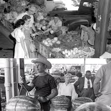
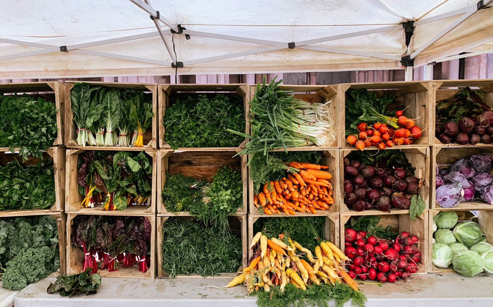
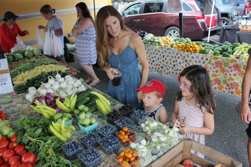

About Green Orchard Farmers Market
Our History
The Green Orchard Farmers Market was established in 1980 with the aim of providing fresh, locally-grown produce to the community. Over the years, we have expanded our market to include a variety of vendors offering everything from fresh vegetables and fruits to handmade crafts and artisanal products. However, in recent decades, there has been a resurgence of interest in farmers markets due to growing concerns about food quality, sustainability, and supporting local economies. They play a vital role in promoting healthy eating, supporting small-scale farmers, and fostering a sense of community.
Our Mission
Our Mission is to support local farmers and artisans by providing them with a platform to sell their products directly to consumers. We believe in the importance of sustainable farming practices and aim to promote health eating habits within our community. From live music performances and cooking demonstrations to kids activities and farm tours, there is something for everyone. Don't miss our special events, such as the Annual Harvest Festival & Farm-to-Table Dinner. Join us every Saturday from 11AM to 8PM at the central park in Delhi.
Our Vision
We envision a community where everyone has access to fresh, nutritious food. We aim to create a welcoming space where people can come together to enjoy local produce, learn about sustainable farming, and support their local economy. Our market features a diverse selection of local vendors offering organic vegetables, fruits, homemade jams, artisans bread, handcrafted things and more. Throughout the summer, we have a variety of events planned to engage and entertain our visitors.
